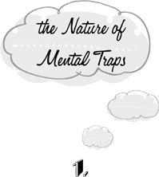

{% include JB/setup %}
{% raw %}
<div>

<h1 id="filepos2750" class="calibre19"><span class="calibre20"><span class="bold"><a class="calibre21"></a></span></span></h1><div class="calibre16"> </div>
<p class="calibre22">                 <a class="calibre23"></a><a class="calibre23"></a>ental traps are habitual modes of thinking that disturb our ease, take up enormous amounts of our time, and deplete our energy, without accomplishing anything of value for us or for anyone else in return.</p>
<p class="calibre22">The word “value” here, and throughout this book, refers to whatever seems worthwhile to us. This book is not a moral tract. It doesn’t take the side of useful work against recreation, or social involvement against self-indulgence. If we’re content to watch television all day, then this activity will not be counted here as a waste of time. Watching television has value for us.</p>
<p class="calibre22">The fact remains that we often exhaust ourselves in troublesome pursuits that don’t in any way further the actualization of our very own values, whatever they may happen to be. These useless pursuits are the mental traps. Mental traps keep us from enjoying television as readily as they keep us from serious work. They are absolute wastes of time.</p>
<p class="calibre22">Mental traps are identified not by the <em class="calibre9">content</em> of our ideas but by their <em class="calibre9">form.</em> Any aspect of daily <a class="calibre23"></a>life—household chores, weekend recreation, careers, relationships—may be thought about either productively or unproductively. We fall into the same traps when we wash the dishes as when we contemplate marriage or divorce. It’s not the subject of our thinking, but how we deal with the subject, that makes the difference. When we rid ourselves of any one trap, we find that our problems in every department of life are simultaneously eased.</p>
<p class="calibre22">We build unproductive structures of thought on every conceivable timescale. One and the same mental trap may hold us in its sway for a fleeting moment or for a lifetime. And the momentary traps are just as pernicious as the lifelong traps. Because of their brevity, the mere moments of wasted time and energy are especially difficult to grasp and correct. They’re over and done with before we’re aware of what we’re doing. The result is that they’re fallen into with monumental frequency. It’s doubtful that the average twenty-first-century urban adult is altogether free of them for more than a few minutes at a time. By the end of the day, the cumulative effect of these brief episodes may be an entirely unaccountable exhaustion.</p>
<p class="calibre22"><a class="calibre23"></a>The basic idea underlying mental traps was concisely expressed a few thousand years ago:</p>
<div class="calibre7"><blockquote class="calibre2"><span class="calibre3">
<p class="calibre24">To everything there is a season, and a time for every purpose under Heaven.</p>
</span></blockquote></div><div class="calibre5"> </div>
<p class="calibre24">When we deviate from this profound advice— when we begin at the wrong time, proceed at the wrong pace, quit too soon or too late—we fall short of what we might otherwise accomplish.</p>
<p class="calibre22">Again, there’s no attempt here to prescribe the content of our activities. To <em class="calibre9">everything</em> there is a season. Both the enjoyment of good food and the scramble up the ladder of success may be legitimate parts of our life. But if we try to advance our career while we’re eating dinner, we ruin our digestion—and we can’t really do good work as we pass the salt and slurp the soup. Neither of our values is well served. Given the same values, we could make far better use of our time and resources.</p>
<p class="calibre22">Our lapses from doing the best thing at the best time and in the best way fall into recurrent and readily identifiable patterns. These are the mental traps.</p>
<p class="calibre4"></p><div class="calibre5"> </div>
<p class="calibre24"><a class="calibre23"></a>If mental traps are injurious to us, why do we fall into them? Why don’t we simply quit? There are three reasons. First, we’re often unaware of what we’re thinking. Second, even when we are aware of our thoughts, we often don’t recognize their injurious nature. Third, even when we recognize their injurious nature, we often can’t quit because of the force of habit.</p>
<p class="calibre22">If the thinking that goes on when we’re trapped remains below the level of consciousness, we can’t even begin to change it. We can’t choose to stop doing what we’re not aware of doing in the first place. If we didn’t know that we wore clothes, it would never occur to us to take them off, even if we felt too hot. By the same token, when we don’t know that we’re thinking unproductive thoughts, the option of stopping doesn’t present itself.</p>
<p class="calibre22">The idea that we can be unaware of our own thoughts may strike us as paradoxical, for we tend to equate consciousness with thinking itself. But the two are by no means identical processes. We may be exquisitely conscious of the taste of an exotic fruit or the feel of an orgasm without having a thought in our head. And we may be filled to overflowing with an unbroken <a class="calibre23"></a>stream of ideas without noticing a single one. The following mental experiment will convince us of this important point.</p>
<p class="calibre22">When we aren’t occupied with any definite business or pleasure, our thoughts often wander from one topic to another on the basis of the flimsiest associations. This experiment can be conducted only when we happen to catch ourselves in the midst of such wanderings. For those who don’t fall asleep quickly, the time spent lying awake in bed is especially rich in this material. As soon as we catch ourselves wandering, we can begin a backward reconstruction of the sequence of ideas that led us to where we are. If we were thinking about the beauty of Paris, we may recall that this was preceded by a thought about a friend who has just returned from there. The idea of the friend’s return may have come from the recollection that this person owes us money, which may in turn have come from ruminations about our financial difficulties, which may have been elicited by the idea that we would like to buy a new car.</p>
<p class="calibre22">In this experiment, it’s essential <em class="calibre9">not</em> to decide ahead of time that we <em class="calibre9">will</em> reconstruct the next few minutes of thought. We have to wait until we <a class="calibre23"></a>catch ourselves in midstream. When this happens, we’re invariably surprised at the twists and turns taken by the stream of our ideas. Without an active reconstruction, we would never have suspected that the thought of Paris had its origin in the desire for a new car! And it’s this experience of surprise that proves the point. <em class="calibre9">We wouldn’t be surprised unless we didn’t know what we had been thinking.</em> Our thinking was unconscious. Evidently, the process of thinking no more depends on our continuous attention to it than walking depends on our continuously keeping track of the position of our arms and legs.</p>
<p class="calibre22">Mental traps often remain below the level of awareness in just this way. We fall into them automatically, without making a conscious decision. The first requirement for getting rid of them is to learn the art of detection. This book provides the materials necessary to meet that requirement. It’s a naturalist’s guide to a certain order of mental flora, outlining the conspicuous characteristics of its various members, replete with illustrative examples. It’s a handbook for the identification of mental traps.</p>
<p class="calibre22">Learning to detect and identify the traps is the first step. But detection and identification <a class="calibre23"></a>aren’t enough to put an end to them. We also need to be convinced that they’re useless and injurious. This isn’t always obvious. In fact, mental traps are often mistaken for absolutely essential activities without which life would become chaotic and dangerous. Some traps are even celebrated in famous proverbs. We will not move against them until we’re thoroughly convinced that they have no redeeming value.</p>
<p class="calibre22">Every good naturalist’s guide contains this sort of practical information. What’s the use of learning to identify the amanita mushroom if we’re not also told that it’s poisonous? In this handbook too, the various aids to the identification of mental traps are supplemented by analyses of their harmful effects.</p>
<p class="calibre22">Having learned to identify the traps and having been convinced that it’s to our advantage to be rid of them, we are left with an ordinary case of a bad habit. At this stage, we’re like a smoker who has accepted the findings of the surgeon general’s report. As every smoker knows, it’s only now that the real battle begins. In the battle against mental traps, as in the battle against smoking, resolutions will be made and broken and made again. Some people will succeed in kicking <a class="calibre23"></a>the habit and some will fail. Many will at least be motivated to cut down. The last chapter of this book offers strategic advice for how to conduct this battle against mental traps.</p>
<p class="calibre25">Naturalists have to go to the forest to encounter the objects of their studies. Hunters after mental traps find their prey in the midst of everyday life. It’s in the most ordinary affairs—in shopping, balancing the checkbook, keeping appointments, answering the telephone, brushing our teeth, talking to a friend—that we learn most about mental traps. When the stakes are high, we become too fixed on the outcome to maintain an observational attitude toward ourselves. But when the activity is more or less routine, we find the mental leeway to examine what we do and the courage to try a new approach.</p>
<p class="calibre22">When we begin to study ourselves in this way, we reap an unexpected benefit quite aside from the increase in self-knowledge. Ordinary life immediately becomes extraordinary and fascinating. A telephone call in the midst of our work is no longer merely an irritation—it’s a prized opportunity to observe the effects of interruptions. Arriving late for a movie gives us a chance <a class="calibre23"></a>to investigate the nature of small disappointments. Working under a deadline is endlessly rich in opportunities for self-discovery. Washing the dishes is an arena in which we may observe the play of diverse psychological forces—the same forces, in fact, that contend at the most remarkable junctures of life. Were it not for these little trials and tribulations, we would be unable to learn anything about ourselves. So we begin to welcome trouble as an ally, and to be fascinated by our reactions to it. And everyday life is transformed into an endless adventure. For what is adventure if not an attitude toward trouble?</p>
<p class="calibre22">It’s time to begin our exploration of the internal landscape. We needn’t be in too great a hurry to change things around. Drastic intervention can wait until we understand the ecological balance of this unfamiliar terrain. Meanwhile, let’s enjoy the sights. Even the amanita mushroom has its beauty.</p>  <div class="mbppagebreak" id="calibre_pb_6"></div></div>

{% endraw %}

